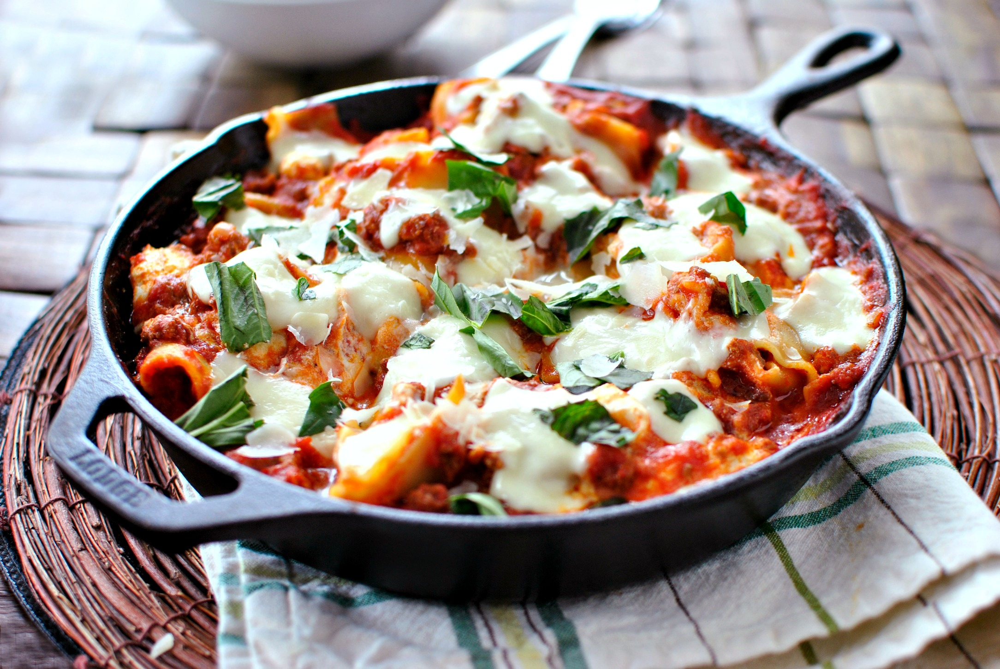

Skillet Lasagna

Description
This no-bake skillet lasagna is made right on your stovetop and is a fast and easy alternative to store-bought hamburger mixes!
Ingredients
-
1/2 lb ground beef
-
1/2 jar spaghetti sauce
-
1 can diced onions
-
1/2 onion, chopped
-
2 teaspons basil
-
1 teaspoon black pepper
-
2 cups noodles
-
1 cup shredded mozarella cheese
Steps
-
In skillet, cook beef and drain grease.
-
Add in sauce and seasonings. Cook over low heat about 15 minutes. Until sauce is hot.
-
Meanwhile, bring water to boil and cook noodles about 8 minutes. Drain water from noodles.
-
Combine sauce and noodles, add cheese on top.
-
Place skillet under hot broiler. Cook till cheese is gold and bubbly. About 3 to 5 minutes.